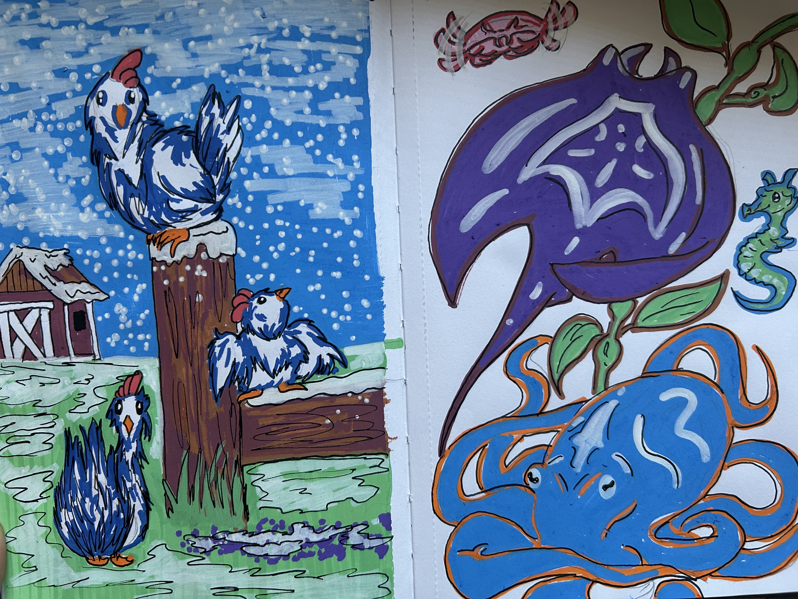
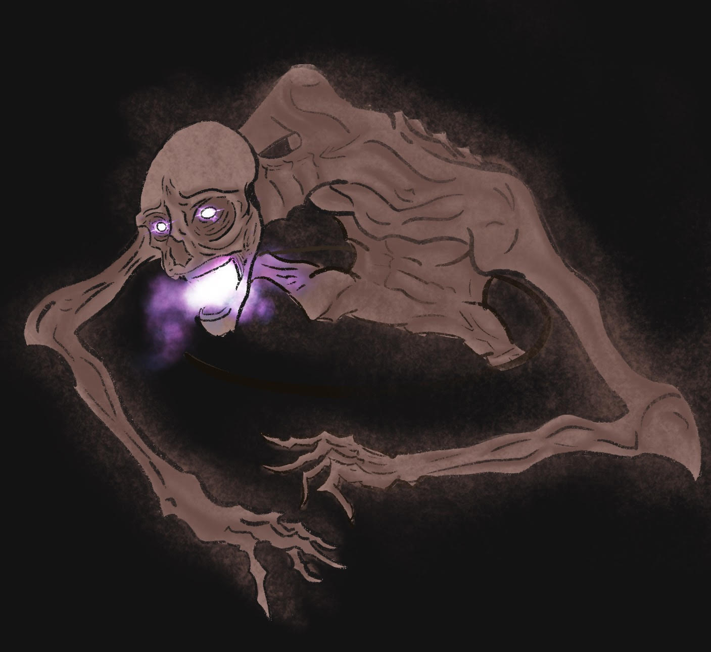
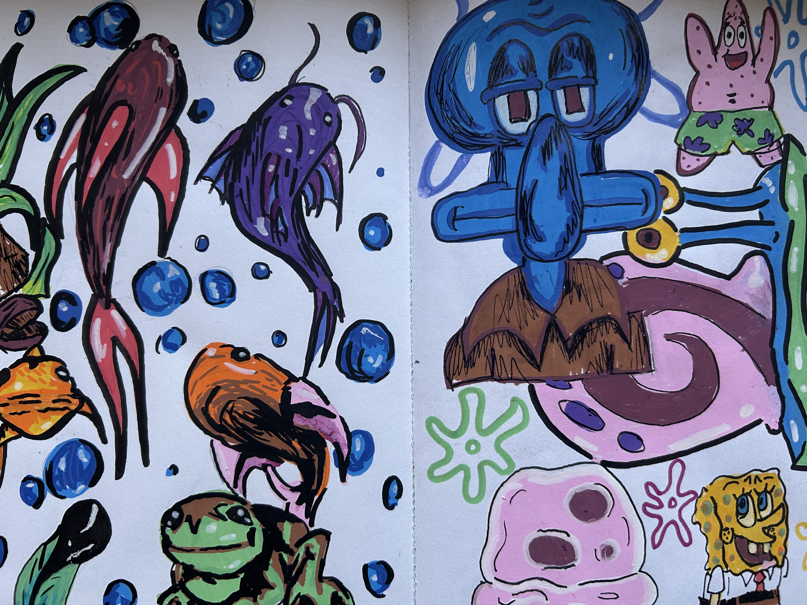
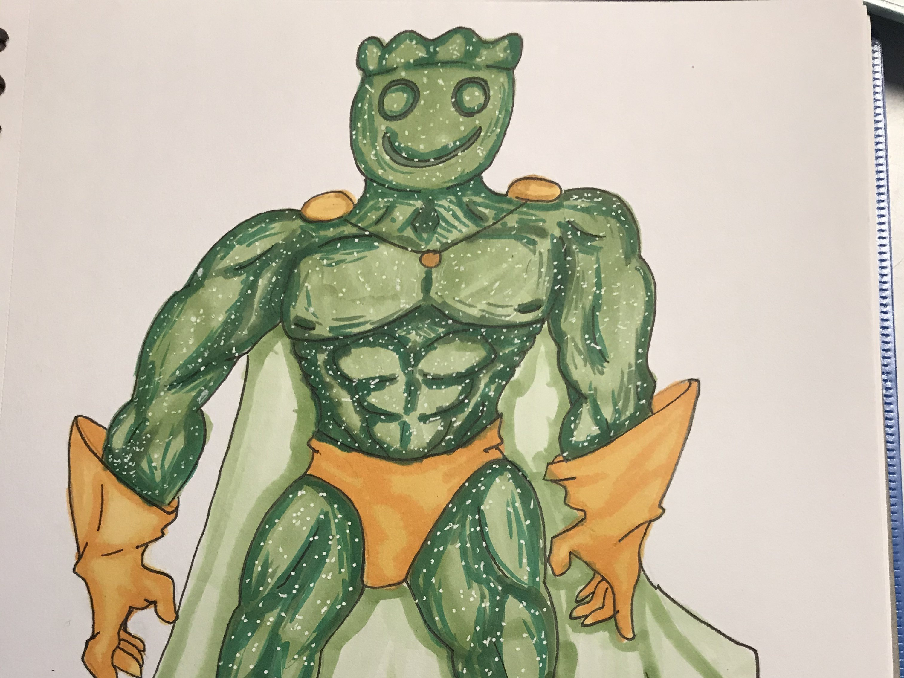

Acrylic markers are a game-changer for artists looking to add bold, vibrant details to their work. Unlike traditional paintbrushes, these markers offer precise control, making it easy to create crisp lines, sharp edges, and intricate designs without the mess of mixing paints. They work beautifully on a variety of surfaces—canvas, wood, glass, even rocks—giving you the freedom to experiment with different textures. The quick-drying, opaque ink layers well, so you can build up colors or add highlights without smudging. Plus, the rich pigmentation means your artwork stays bright and vivid over time. I recently got some acrylic markers from a 5 below store and have had a blast learning to use them just by doing little drawings here and there. This doodle I did here was just something to keep my hands occupied as I finished binge watching Gossip girl but when I was done, I discovered how much easier it was to use the markers rather than the normal paint. I am already scheduling another trip to 5 below for more of these markers!


Online creating! Procreate is a versatile app that makes digital drawing easy and fun. With customizable brushes, smooth layering, and intuitive gestures like two-finger undo, it’s perfect for creating anything from sketches to detailed paintings. Plus, the built-in time-lapse feature lets you share your art process effortlessly. Whether you’re a beginner or a pro, Procreate is a must-have for digital artists. I really fell in love with procreate after my first commisioned piece got sold. I gathered up the 60 dollars for the app and went on my way to having more customers on my art instagram. The image here was one I did outside of my comfort zone as I made it for a friend for their DND campaign. This grotesque looking thing was one of the main villians in the campaign and their signature look was the glowing purple eye which with normal mediums, would be very hard to create, but with procreate, it was the easiest way to get that light layered just right! I love using procreate and I think you will too!
A "throwaway" sketchbook is one of the best ways to keep creativity flowing without pressure or perfectionism. It’s a space where you can scribble, doodle, and experiment without worrying about the outcome—just pure, unfiltered fun. Messy sketches, half-finished ideas, and random color tests all have a place here, making it the perfect creative playground. There’s no need to plan or overthink; just let your hand move and see where it takes you. The beauty of a sketchbook like this is that mistakes don’t matter—in fact, they might even lead to unexpected inspiration. Whether you're warming up before a big project, testing new materials, or simply letting your mind wander, a throwaway sketchbook is a judgment-free zone where art is about the process, not the result. As you can see here, while these pages are better than my other "throw away" sketch pages, I had so much fun NOT worrying about what I was going to put down on the paper as I just let my hand mindlessly wander until I came up with... Spongebob doodles?

Character creation is one of the most fun and chaotic parts of drawing—especially when you throw logic out the window and just go wild. There’s something hilarious about designing a grumpy-looking banana with arms, a detective pigeon in a tiny trench coat, or a muscly goldfish with sunglasses. The weirder, the better! These silly creations don’t need perfect anatomy or deep backstories—they exist purely for fun, to make you (and maybe others) laugh. Whether you're sketching a ridiculously dramatic villain with noodle arms or a confused frog in a business suit, letting loose and embracing the absurd is a great way to shake off art block and just enjoy the creative process. Sometimes, the best ideas come from not taking things seriously at all! Like with the drawing here, I was snacking on sour patch kids earlier in the day and I had nothing else better to do then make a muscled up sour patch kid. Just making something funny for the sake of it is something so easy yet joy-bringing that I highly reccomend it to everyone that may have artblock. Even with this being created when I was in highschool, I still look back at it sometimes and giggle.
